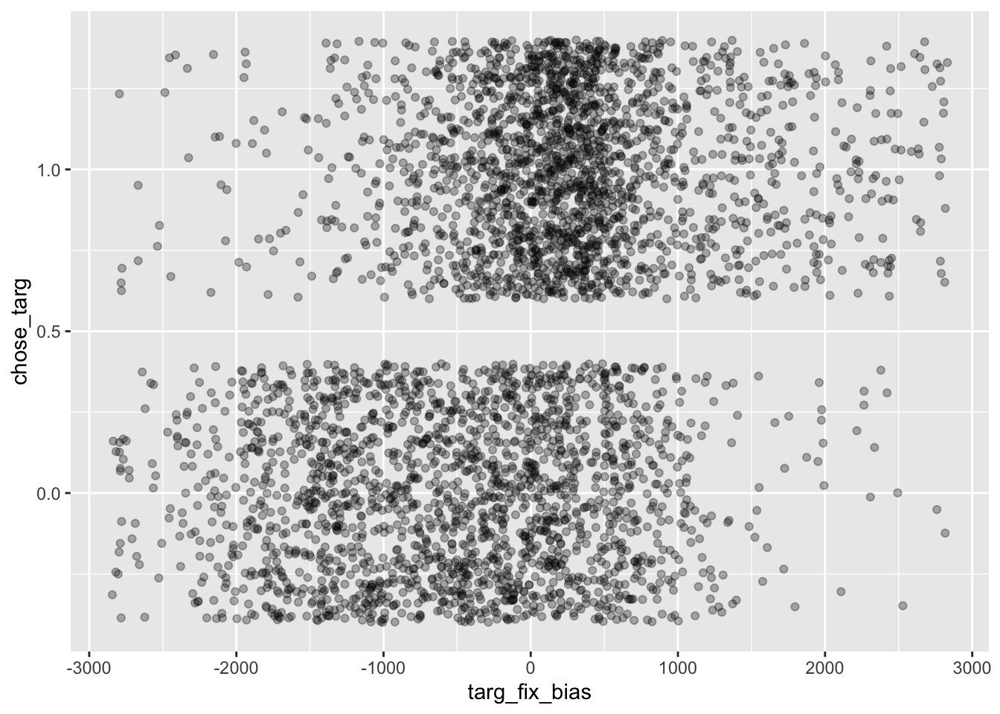
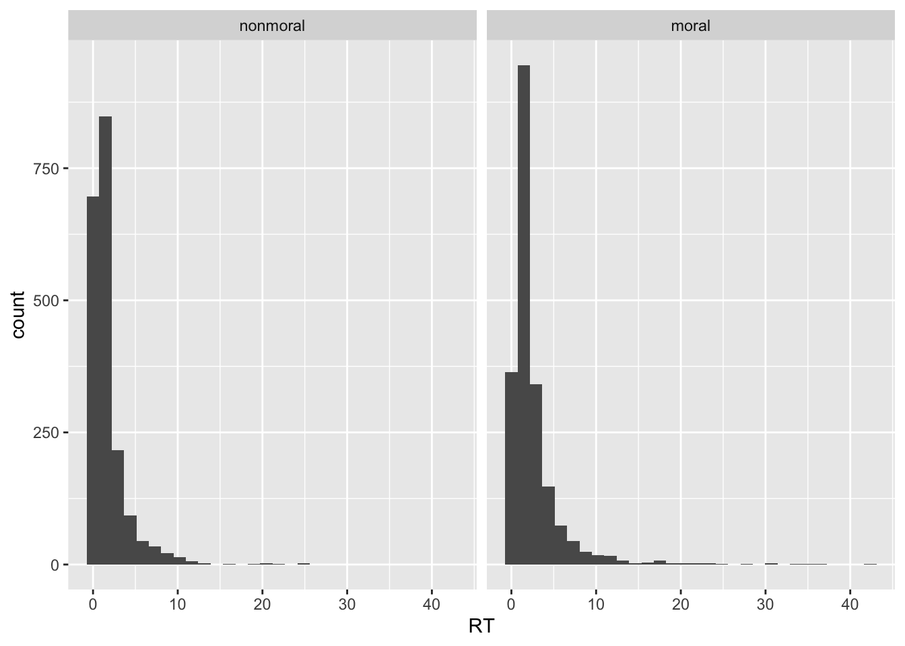
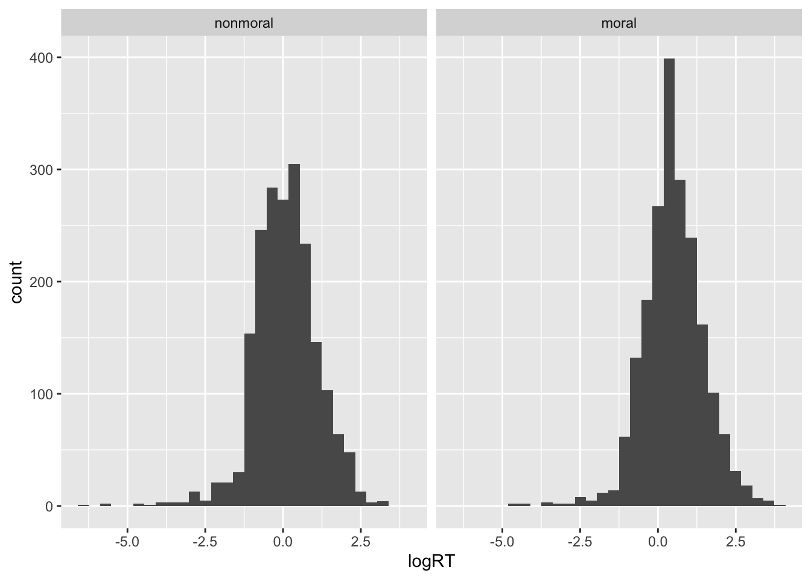
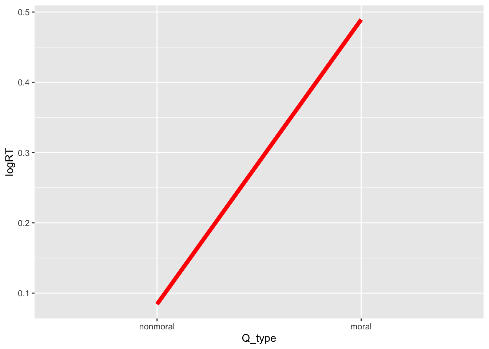
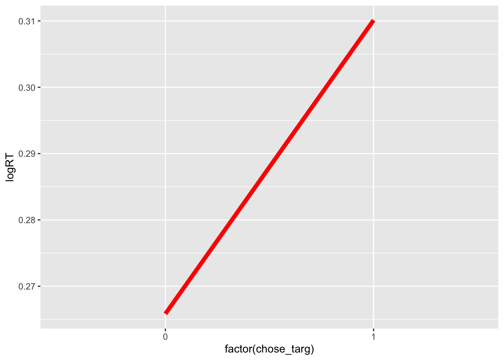
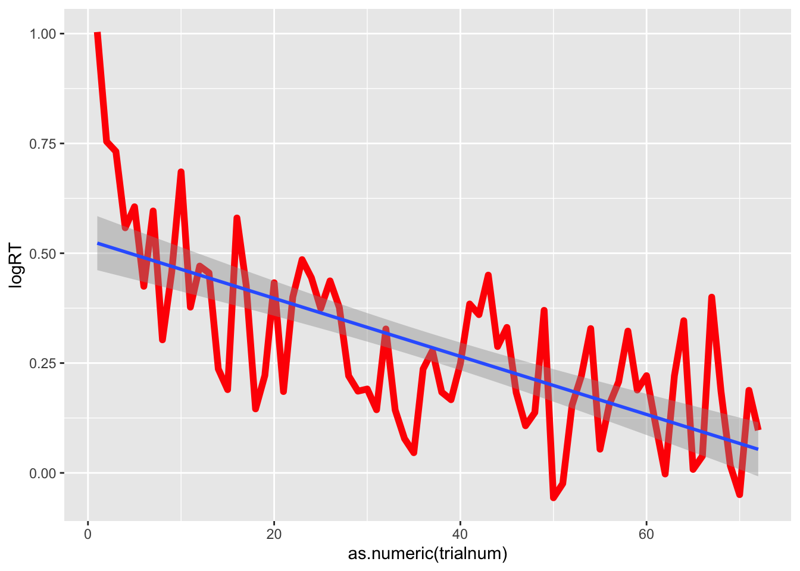

library(tidymodels)
library(tidyverse)
load("~/Documents/Github/BDSR2/data/moralDecisions.Rdata")
moralDecisions = moralDecisions %>% select(-c(timeout, norm_resp_bias))Module 4 Lab: Model Evaluation and Comparison
Introduction

Imagine that Jane has made a moral commitment to not eating veal anymore, despite the fact that veal parmigiana is her favorite dish. She sits down at her favorite Italian restaurant and peruses the menu. Her eyes flit back and forth between her old favorite, veal parmigiana, and her new replacement, chicken parmigiana. She wants to adhere to her new moral code, but the veal is tempting. Just as her eyes happen to have settled on the veal for about 1 s, suddenly the waiter walks up and asks what she would like to order. If the waiter had shown up a second or two later, she might have managed to settle her eyes, and her mind, back on the chicken. But, in that moment, her decision is prompted and she caves, ordering the veal.
The dataset for this lab comes from an experiment in which we tested the idea that our decisions could be swayed by the timing of when we are asked for a response. In the experiment, participants heard moral questions, such as “Is murder ever justifiable?”, and non-moral questions, such as “Is Denmark larger than Sweden?” For each question, there were two possible response options, and participants were instructed to click on their preferred choice.
Unbeknownst to participants, the experiment software was trying to get them to choose one of the two options on each trial. For each question, one of the two responses was randomly designated as the “target” response, and the experimenters used an eye tracker to record the amount of time the participant spent looking at the target response, versus the other response. Only once the participant spent at least 750ms looking at the target option were they prompted to respond. The experimenters hypothesized that participants would be more likely to choose the target when (1) they spent more time looking at the target, relative to the other response, (2) the target was the last thing they looked at before being prompted to respond.
The variables in this dataset include:
subj_id: a unique identifier for each participanttrialnum: an identifier for which trial each row corresponds to (in terms of order within the study)Q_type: whether the question was a moral or non-moral onetarg_loc: whether the “target” response was on the left or right side of the screenchoice_loc: whether the participant chose the response on the left or right side of the screenRT: reaction timeleft_fixTime_ms: time (in milliseconds) spent looking at the response option on the left side of the screenright_fixTime_ms: time (in milliseconds) spent looking at the response option on the right side of the screenQ_id: a unique identifier for each questionlastfix: whether the participant looked at the left or right response option last (just before they were prompted to respond)Q_text: the text of question they heardoption1_text: the text of the first response optionoption2_text: the text of the second response option
head(moralDecisions) subj_id trialnum Q_type targ_loc choice_loc RT left_fixTime_ms
1: 1 1 nonmoral right left 2.1918 1148
2: 1 2 moral left right 2.5321 1004
3: 1 3 moral right right 10.8442 1948
4: 1 4 moral right left 1.2483 1700
5: 1 5 moral left left 1.1335 1668
6: 1 6 nonmoral left left 1.6140 1220
right_fixTime_ms Q_id lastfix
1: 248 f30 left
2: 252 e73 right
3: 0 e19 left
4: 0 e81 left
5: 252 e97 right
6: 0 f11 left
Q_text
1: Is Isaac Newton the greatest scientist?
2: Animals should have the same rights as humans.
3: A person who buys food for sharing with their friends has the right to take a larger share of it.
4: Women and minorities should automatically be paid more to correct longstanding biases.
5: Free speech should never be revoked, even in the case of horrible hate-speech.
6: Is English the most popular human language?
option1_text option2_text
1: Yes No
2: Same rights as humans Less rights than humans
3: Buyer has right to larger share Buyer has right to equal share
4: Pay more Choice of employer
5: Revoke hate-speech Protect all speech
6: Yes NomoralDecisions <- moralDecisions %>%
mutate(chose_targ = ifelse(targ_loc == choice_loc, 1, 0)) %>%
mutate(targ_fixTime = ifelse(targ_loc=="left", left_fixTime_ms, right_fixTime_ms),
nontarg_fixTime = ifelse(targ_loc=="left", right_fixTime_ms, left_fixTime_ms)) %>%
mutate(targ_fix_prop = targ_fixTime/(targ_fixTime+nontarg_fixTime),
targ_fix_bias = targ_fixTime - nontarg_fixTime) %>%
mutate(lastfix_item = factor(ifelse(lastfix == targ_loc, "T", "C"), levels=c("C","T")))ggplot(moralDecisions, aes(x = targ_fix_bias, y = chose_targ)) +
geom_jitter(alpha=.3)
ggplot(moralDecisions, aes(x = targ_fix_bias, y = chose_targ, color = Q_type, linetype = lastfix_item)) +
geom_point(alpha=.3) +
geom_smooth(method = 'glm', method.args = list(family = "binomial"))`geom_smooth()` using formula = 'y ~ x'
split <- moralDecisions %>%
mutate(chose_targ = factor(chose_targ)) %>%
group_initial_split(group=subj_id)
train <- training(split)
test <- testing(split)log_spec <- logistic_reg(
mode = "classification",
engine = "glm"
)
lr_wf <- workflow() %>%
#add_variables(outcomes = chose_targ, predictors = c(targ_fix_bias, lastfix_item, Q_type)) %>%
step_normalize(all_numeric_predictors())
library(discrim)
Attaching package: 'discrim'The following object is masked from 'package:dials':
smoothnessnb_spec = naive_Bayes(
mode = "classification",
engine="naivebayes"
)multi_metric <- metric_set(accuracy,bal_accuracy, f_meas, roc_auc)set.seed(123)
lr_fit_0 <- lr_wf %>%
add_model(log_spec) %>%
add_formula(chose_targ ~ lastfix_item) %>%
fit(data = train)
lr_fit_0 %>%
augment(train) %>%
multi_metric(truth=chose_targ, estimate=.pred_class, .pred_1, event_level="second")# A tibble: 4 × 3
.metric .estimator .estimate
<chr> <chr> <dbl>
1 accuracy binary 0.612
2 bal_accuracy binary 0.611
3 f_meas binary 0.631
4 roc_auc binary 0.611set.seed(123)
nb_fit_0 <- workflow() %>%
add_model(nb_spec) %>%
add_formula(chose_targ ~ lastfix_item) %>%
step_interact(terms = ~ .:.) %>%
fit(data = train)
nb_fit_0 %>%
augment(train) %>%
multi_metric(truth=chose_targ, estimate=.pred_class, .pred_1, event_level="second")# A tibble: 4 × 3
.metric .estimator .estimate
<chr> <chr> <dbl>
1 accuracy binary 0.612
2 bal_accuracy binary 0.611
3 f_meas binary 0.631
4 roc_auc binary 0.611set.seed(123)
lr_fit_1 <- workflow() %>%
add_model(log_spec) %>%
add_formula(chose_targ ~ targ_fix_bias + lastfix_item + Q_type) %>%
#step_interact(terms = ~ .:.) %>%
fit(data = train)
lr_fit_1 %>%
augment(train) %>%
multi_metric(truth=chose_targ, estimate=.pred_class, .pred_1, event_level="second")# A tibble: 4 × 3
.metric .estimator .estimate
<chr> <chr> <dbl>
1 accuracy binary 0.679
2 bal_accuracy binary 0.678
3 f_meas binary 0.703
4 roc_auc binary 0.746#lr_fit_1 %>% extract_fit_engine()set.seed(123)
nb_fit_1 <- workflow() %>%
add_model(nb_spec) %>%
add_formula(chose_targ ~ targ_fix_bias + lastfix_item + Q_type) %>%
step_interact(terms = ~ .:.) %>%
fit(data = train)
nb_fit_1 %>%
augment(train) %>%
multi_metric(truth=chose_targ, estimate=.pred_class, .pred_1, event_level="second")# A tibble: 4 × 3
.metric .estimator .estimate
<chr> <chr> <dbl>
1 accuracy binary 0.678
2 bal_accuracy binary 0.678
3 f_meas binary 0.697
4 roc_auc binary 0.753lr_fit_0 %>%
augment(test) %>%
multi_metric(truth=chose_targ, estimate=.pred_class, .pred_1, event_level="second")# A tibble: 4 × 3
.metric .estimator .estimate
<chr> <chr> <dbl>
1 accuracy binary 0.650
2 bal_accuracy binary 0.649
3 f_meas binary 0.671
4 roc_auc binary 0.649lr_fit_1 %>%
augment(test) %>%
multi_metric(truth=chose_targ, estimate=.pred_class, .pred_1, event_level="second")# A tibble: 4 × 3
.metric .estimator .estimate
<chr> <chr> <dbl>
1 accuracy binary 0.693
2 bal_accuracy binary 0.691
3 f_meas binary 0.721
4 roc_auc binary 0.766nb_fit_1 %>%
augment(test) %>%
multi_metric(truth=chose_targ, estimate=.pred_class, .pred_1, event_level="second")# A tibble: 4 × 3
.metric .estimator .estimate
<chr> <chr> <dbl>
1 accuracy binary 0.696
2 bal_accuracy binary 0.695
3 f_meas binary 0.716
4 roc_auc binary 0.767moralDecisions %>%
ggplot(aes(x = RT)) +
geom_histogram() +
facet_wrap(~Q_type)`stat_bin()` using `bins = 30`. Pick better value with `binwidth`.
moralDecisions = moralDecisions %>% mutate(logRT = log(RT))
moralDecisions %>%
ggplot(aes(x = logRT)) +
geom_histogram() +
facet_wrap(~Q_type)`stat_bin()` using `bins = 30`. Pick better value with `binwidth`.
moralDecisions %>% mutate(logRT = log(RT)) %>%
ggplot(aes(x = Q_type, y = logRT)) +
#geom_point(alpha=.3) +
stat_summary(geom="line",fun=mean, aes(group=1), color="red", size=2)Warning: Using `size` aesthetic for lines was deprecated in ggplot2 3.4.0.
ℹ Please use `linewidth` instead.
moralDecisions %>% mutate(logRT = log(RT)) %>%
ggplot(aes(x = factor(chose_targ), y = logRT)) +
#geom_point(alpha=.3) +
stat_summary(geom="line",fun=mean, aes(group=1), color="red", size=2)
moralDecisions %>% mutate(logRT = log(RT)) %>%
ggplot(aes(x = as.numeric(trialnum), y = logRT)) +
#geom_point(alpha=.3) +
stat_summary(geom="line",fun=mean, aes(group=1), color="red", size=2) +
geom_smooth(method="lm")`geom_smooth()` using formula = 'y ~ x'
split <- moralDecisions %>%
mutate(chose_targ = factor(chose_targ)) %>%
group_initial_split(group=subj_id)
train <- training(split)
test <- testing(split)multi_metric <- metric_set(rmse, mae, rsq)set.seed(123)
lin_spec <- linear_reg()
lin_fit_0 <- workflow() %>%
add_model(lin_spec) %>%
add_formula(logRT ~ Q_type) %>%
fit(data = train)
lin_fit_0 %>%
augment(train) %>%
multi_metric(truth = logRT, estimate = .pred)# A tibble: 3 × 3
.metric .estimator .estimate
<chr> <chr> <dbl>
1 rmse standard 1.01
2 mae standard 0.758
3 rsq standard 0.0413set.seed(123)
lin_fit_1 <- workflow() %>%
add_model(lin_spec) %>%
add_formula(logRT ~ Q_type + chose_targ + trialnum) %>%
#step_interact(~ all_predictors():all_predictors()) %>%
fit(data = train)
lin_fit_1 %>%
augment(train) %>%
multi_metric(truth = logRT, estimate = .pred)# A tibble: 3 × 3
.metric .estimator .estimate
<chr> <chr> <dbl>
1 rmse standard 0.982
2 mae standard 0.740
3 rsq standard 0.0887lin_fit_0 %>%
augment(test) %>%
multi_metric(truth = logRT, estimate = .pred)# A tibble: 3 × 3
.metric .estimator .estimate
<chr> <chr> <dbl>
1 rmse standard 0.938
2 mae standard 0.706
3 rsq standard 0.0370lin_fit_1 %>%
augment(test) %>%
multi_metric(truth = logRT, estimate = .pred)# A tibble: 3 × 3
.metric .estimator .estimate
<chr> <chr> <dbl>
1 rmse standard 0.947
2 mae standard 0.707
3 rsq standard 0.0365set.seed(123)
lin_fit_2 <- workflow() %>%
add_model(lin_spec) %>%
add_formula(logRT ~ Q_type + chose_targ + trialnum + subj_id) %>%
#step_interact(~ all_predictors():all_predictors()) %>%
fit(data = train)
lin_fit_2 %>%
augment(train) %>%
multi_metric(truth = logRT, estimate = .pred)Warning in predict.lm(object = object$fit, newdata = new_data, type =
"response", : prediction from rank-deficient fit; consider predict(.,
rankdeficient="NA")# A tibble: 3 × 3
.metric .estimator .estimate
<chr> <chr> <dbl>
1 rmse standard 0.842
2 mae standard 0.643
3 rsq standard 0.329lin_fit_2 %>%
augment(test) %>%
multi_metric(truth = logRT, estimate = .pred)Warning in predict.lm(object = object$fit, newdata = new_data, type =
"response", : prediction from rank-deficient fit; consider predict(.,
rankdeficient="NA")# A tibble: 3 × 3
.metric .estimator .estimate
<chr> <chr> <dbl>
1 rmse standard 1.03
2 mae standard 0.774
3 rsq standard 0.0367